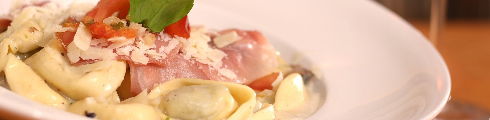

Tortellini alla Panna
| 250 | g Tortellini |
| 2 | g Salz |
| 20 | g Butter |
| 2 | EL Olivenöl |
| 100 | g Kochschinken |
| 250 | ml Sahne |
| 2 | Eigelb |
| 1 | Prise Muskatnuss |
| 60 | g geriebener Hartkäse |
Zubereitung
Die Tortellini in einem Topf mit kochendem und leicht gesalzenem Wasser nach Packungsangabe abkochen.
Währenddessen die Butter und das Olivenöl in einem Topf oder einer Pfanne langsam erhitzen.
Den Schinken würfeln oder in Streifen schneiden, zum Fett hinzugeben und sanft darin anbraten. Mit der
Hälfte der Sahne ablöschen, einmal aufkochen und dann auf kleiner Stufe köcheln lassen.
Die andere Hälfte der Sahne in einer Schüssel mit dem Eigelb, der geriebenen Muskatnuss und dem Käse
verrühren. Die Mischung langsam, unter ständigem Rühren, in die Pfanne zur Schinken-Sahne geben. Die
Tortellini mit einem Sieb abgießen und in die Sauce geben. Mit dem Salz und dem Pfeffer würzen und mit
dem
geriebenen Hartkäse bestreuen.